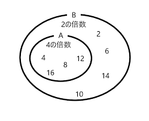
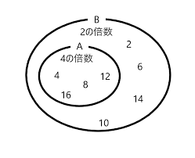
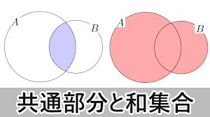
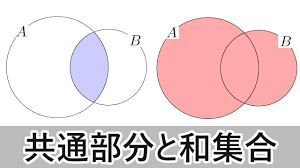
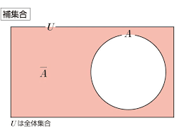
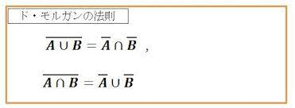
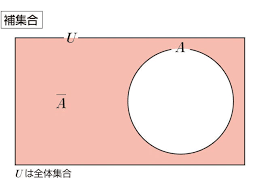
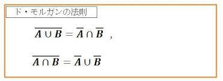

集合や確率、組みあわせ
集合
集合の表現方法
属する
aが集合Aの要素であるとき、 a ∊ A またはA ∍ a と表する。
bが集合Aの要素ではないとき、 b ∉ A またはA ∌ b と表する。
bが集合Aの要素ではないとき、 b ∉ A またはA ∌ b と表する。
集合の表記方法
例えば1から10の自然数のうち、機数全体をAとすると、1,3,5,7,9を要素とする集合になる。このことを記号で表現する時、次の2つの方法がある。
- 具体的な要素を書く方法 中かっこを用いて、A = {1,3,5,7,9}
- 条件を書く方法 A = {X | 1 ≦ x ≦ 10, xは奇数}
例1：1から100までの偶数の集合体
1から100までの偶数の集合体は
- 要素を書く場合 A = {2,4,6,…100}
- 条件を書く場合 A = {x | 1 ≦ x ≦ 100, xは偶数}
または
A = {2x | 1 ≦ x ≦ 50, xは自然数}
例2：自然数のうち，3の倍数全体の集合Ａ
- 要素を書く場合 A = {3,6,9…}
- 条件を書く場合 A = {3n | nは自然数}
集合の種類
部分集合
2つの集合A,Bについて、Aのどの要素もBの要素である場合、AはBの部分集合であると言い、A ⊂ BまたはB ⊃ Aと表す。
A ∩ B = {x | x∈A かつ x∈B}となる。

A ∩ B = {x | x∈A かつ x∈B}となる。

共通部分と和集合
2つの集合A,Bについて、AとBのどちらにも共通に属する要素全体の集合をAとBの共通部分であると言い、A ∩ Bと表す。
例えば、A = {4n | nは自然数}、B = {2n | nは自然数}のとき、Aは4の倍数、Bは2の倍数だから集合Aの要素は全て集合Bの要素（A ⊂ B）となる。
また、AかBの少なくとも一方に属する要素全体の集合をAとBの和集合といい、A∪Bと表す。
∩は"cap"または"かつ"、∪は"cup"または"または"と呼ばれる。

例えば、A = {4n | nは自然数}、B = {2n | nは自然数}のとき、Aは4の倍数、Bは2の倍数だから集合Aの要素は全て集合Bの要素（A ⊂ B）となる。
また、AかBの少なくとも一方に属する要素全体の集合をAとBの和集合といい、A∪Bと表す。
∩は"cap"または"かつ"、∪は"cup"または"または"と呼ばれる。

全体集合と補集合
1つの集合Uを指定して、Uの要素やUの部分だけを考えるとき、Uを全体集合と言う。
全体集合Uの部分集合Aに対して、Aに属さないUの要素全体をUに関する補集合といい、Āと表する。
以下の様な関係式が成り立つ。
A ∪ Ā = U
A ∩ Ā = φ

ド・モルガンの法則


「AかつB」でない、を図示すると上図の左のブルー部分になる。一方、「Aでない」は上図中央、「Bでない」は上図右だ。両者のいずれかが真である「または」、つまり「和」を考えると、そのブルー部分は「AかつB」でない、と全く同じになる。
「AまたはB」でない、を図示したのが下図左のブルーの部分。一方、「Aでない」と「Bでない」は上図の中央および右と全く同じ。両者のいずれも真である「かつ」、つまり「積」を考えてみると、そのブルー部分は「AまたはB」でない
全体集合Uの部分集合Aに対して、Aに属さないUの要素全体をUに関する補集合といい、Āと表する。
以下の様な関係式が成り立つ。
A ∪ Ā = U
A ∩ Ā = φ

ド・モルガンの法則

「AかつB」でない、を図示すると上図の左のブルー部分になる。一方、「Aでない」は上図中央、「Bでない」は上図右だ。両者のいずれかが真である「または」、つまり「和」を考えると、そのブルー部分は「AかつB」でない、と全く同じになる。
「AまたはB」でない、を図示したのが下図左のブルーの部分。一方、「Aでない」と「Bでない」は上図の中央および右と全く同じ。両者のいずれも真である「かつ」、つまり「積」を考えてみると、そのブルー部分は「AまたはB」でない
確率
確率の求め方
関連用語
- 試行：同じ状態のもとで繰り返し行なうことができて、その結果が偶然に支配される実験や観察
- 事象：試行の結果として起こる事がら。A,B,Cなどの文字を用いて表す。
- 全事象：起こりうる場合全体の事象。アルファベットのUで表す。
- 空事象：決して起こらない事象。φ（ファイ）と表す。
- 根元事象：さらに細かく分解して考えることができない事象
P(A) = n(A) / n(U) = 事象Aの起こり得る場合の数 / 起こり得る全ての場合の数
例題
問題1
問
1個のさいころを投げる試行において、出る目が3の場合、偶数の場合それぞれの確率は？
1個のさいころを投げる試行において、出る目が3の場合、偶数の場合それぞれの確率は？
解説
Step1
全体集合Uを求める
U = {1,2,3,4,5,6}
U = {1,2,3,4,5,6}
Step2
3の目が出る事象をA,偶数の目が出る事象をBとすると
A = {3}
B = {2,4,6}
A = {3}
B = {2,4,6}
Step3
P(A) = 1/6
P(B) = 3/6 = 1/2
P(B) = 3/6 = 1/2
問題2
問
赤玉3個、青玉2個入った袋から3個の玉を取り出すとき，赤玉1個と青玉2個である確率は？
赤玉3個、青玉2個入った袋から3個の玉を取り出すとき，赤玉1個と青玉2個である確率は？
解説
Step1
全体集合Uの事象の個数を求める
n(U) = 5C3 = 10
n(U) = 5C3 = 10
Step2
赤玉1個と青玉2個を取り出す事象をBの個数を求める
n(B) = 3C1 * 2C2 = 3
n(B) = 3C1 * 2C2 = 3
Step3
したがって、袋の中から3個取り出したとき、赤玉1個、青玉2個である確率P(B)は
P(B) = 3C1 * 2C2 / 5C3
まとめ
- 事象は集合の形で表現される
- P(U) = 1
- P(φ) = 0
- n(φ) ≦ n(A) ≦ n(U) なので、 辺々n(U)で割ると、0 ≦ P(A) ≦ 1となる
順列
順列の求め方
人の並び方など、順番に意味がある問題では、順列の考え方で場合の数を求められる。
A、B が隣り合う事象をX、全事象をUとし、それぞれの場合の数を n(X)、n(U) とすると以下のようになる。
P(A) = n(A) / n(U)
A、B が隣り合う事象をX、全事象をUとし、それぞれの場合の数を n(X)、n(U) とすると以下のようになる。
P(A) = n(A) / n(U)
例題
問2
問. A、B、C、D、E の 5 人が 1 列に並ぶとき A、B が隣り合う確率を求めよ。
解説
[step1]
n(U) は 5 人全員の並び方の総数であるから、
n(U) = 5P5 = 5! = 5 * 4 * 3 * 2 * 1 = 120
となる。
n(U) = 5P5 = 5! = 5 * 4 * 3 * 2 * 1 = 120
となる。
[step2]
A、B が隣り合う並び方は、A、B の 2 人をまとめて 1 人ととらえ、4 人の並べ方を考えたあと、A、B の並べ方を考えればよい。
4 人の並べ方は4P4、2 人の並べ方は 2P2であるから、
n(X) = 4P4 * 2P2 = 4! * 2! = 4 * 3 * 2 * 1 * 2 * 2 * 1 = 24 * 2 = 48
4 人の並べ方は4P4、2 人の並べ方は 2P2であるから、
n(X) = 4P4 * 2P2 = 4! * 2! = 4 * 3 * 2 * 1 * 2 * 2 * 1 = 24 * 2 = 48
[step3]
よって結果は
P(X) = n(X) / n(U) = 48/120 = 2/5
となる。
P(X) = n(X) / n(U) = 48/120 = 2/5
となる。
組み合わせ
組み合わせの求め方
ただ何かを選ぶ／取り出すなど、順番を考える必要がないときは、組み合わせの考えで解くことができる。
この問題のように、同じものを区別しなくていいときにも組み合わせが使える。
この問題のように、同じものを区別しなくていいときにも組み合わせが使える。
例題
問3
問. 12本のくじの中に当たりくじが 4 本入っている。
同時に2本引くとき、2本とも当たりとなる確率を求めよ。
同時に2本引くとき、2本とも当たりとなる確率を求めよ。
解説
[step1]
2本とも当たりくじを引く事象をA、全事象をUとし、それぞれの場合の数を n(A)、n(U) と表す。
n(U) = 12C2 = 12 * 11 / 2 * 1 = 66（通り）
n(U) = 12C2 = 12 * 11 / 2 * 1 = 66（通り）
[step2]
4本から2本を選ぶ場合の数n(A) は
n(A) = 4C2 = 4 * 3 / 2 * 1 = 6（通り）
n(A) = 4C2 = 4 * 3 / 2 * 1 = 6（通り）
[step3]
よって求める確率P(A)は
P(A) = 6/66 = 1/11
となる
P(A) = 6/66 = 1/11
となる